Практичний досвід · журнал «ДентАрт» 2016 №2
Доадгезивна підготовка тканин зуба. Частина II. Дентин
SURFACE PREPARATIONS FOR ADHESIVE BONDING PART II. DENTIN
Успішність прямих і непрямих реставрацій безпосередньо залежить від якості доадгезивної і власне адгезивної підготовки субстрату. У першій частині статті автор розповів про деякі методи підготовки емалі. У другій частині статті мова піде про складнішу процедуру — доадгезивну підготовку дентину.
Після розкриття порожнини і первинної обробки емалі іде препарування дентину. Зазвичай у клініциста при підготовці емалі не виникає великої кількості питань, але доадгезивна підготовка дентину є цікавішим і складнішим завданням. Передусім необхідно віддиференціювати дентин вітальних зубів при гострому і хронічному карієсі, а також дентин девітальних зубів, оскільки від цього залежатиме методика препарування.
В ураженому карієсом дентині розрізняють два шари. Зовнішній шар (нечутливий, мертвий) — інфікований і демінералізований, він складається з необоротно пошкоджених колагенових волокон і зруйнованих відростків одонтобластів. Внутрішній шар (чутливий) — частково демінералізований, не інфікований, здатний до ремінералізації у вітальних зубах і складається з оборотно денатурованих колагенових волокон та інтактних відростків одонтобластів.
Для ідентифікації каріозного дентину, крім візуальної оцінки препарування, доцільно використовувати детектори карієсу (фото 1).
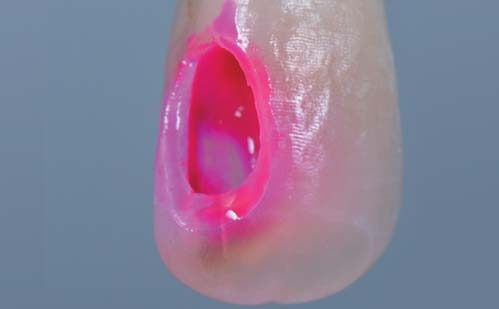
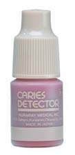
Фото 1. Використання детектора карієсу після розкриття порожнини і первинної некректомії.
Їх почали використовувати з 1970-х років. Це розчини барвників у пропіленгліколі і поліпропіленгліколі: 0,5% р-н фуксину, 1% р-н кислого червоного та ін. Через невелику молекулярну масу пропіленгліколю ці барвники проникають глибоко в дентин і фарбують шар, який може ремінералізуватися і не вимагає препарування. За різними оцінками, вони дають 30% і більше помилково позитивних результатів. При бажанні зрізати глибокий забарвлений шар дентину можна розкрити порожнину зуба. Детектори карієсу на основі поліпропіленгліколю через більшу молекулярну масу більш специфічні для каріозного дентину. Але незважаючи на це, їх використання при гострому глибокому карієсі також може призвести до необґрунтованого забарвлювання парапульпарного дентину і згодом — до розкриття порожнини зуба.
Альтернативою традиційним детекторам карієсу є одноразовий стерильний полімерний бор Poly Bur/Komet (фото 2). Він складається з пластику, який має твердість, трохи меншу, ніж натуральний парапульпарний дентин, тому легко препарує розм'якшені тканини і тупиться при контакті зі здоровими.
При гострому глибокому карієсі препарування необхідно починати традиційними інструментами: розкриття порожнини борами з алмазним покриттям, препарування дентину по периметру порожнини карбід-вольфрамовими (фото 3) або керамічними борами (фото 4), і тільки дно порожнини в зоні порожнини зуба — за допомогою полімерного бору Poly Bur. Дентинний периметр порожнини становить особливий інтерес, тому що протеїновий шар на емалево-дентинному з'єднанні легкопроникний для мікроорганізмів і є слабкою ланкою при первинному поширенні каріозного процесу. Цей шар добре профарбовується детекторами карієсу (фото 5 а, б) і вимагає уважнішого препарування.
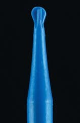
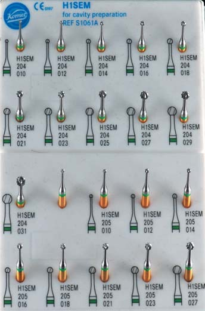
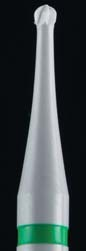
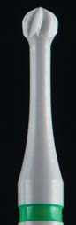
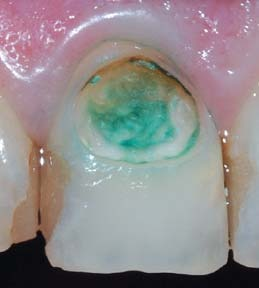
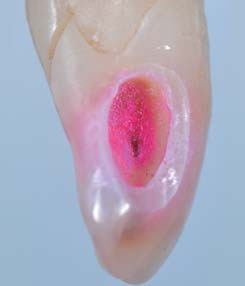
На основі систематизації літератури, знань про каріозний процес і знань про лікування карієсу, орієнтованих на адгезивну техніку, Девід Аллеман і Паскаль Маньє у 2012 році описали концепцію периферійного запечатування, в основі якої — створення периферійної зони від 1 до 3 мм, яка складається з емалі, емалево-дентинного з'єднання і нормального плащового дентину (фото 6 а, б). За наявності нормальних здорових тканин по периметру порожнини шириною від 1 мм до 3 мм забезпечуються максимальна адгезія і герметизм, в результаті чого збільшується термін служби реставрацій. Дотримуючись цієї концепції і препаруючи каріозну порожнину по периметру, не зачіпаючи дна (фото 6 д, е), можна мінімізувати ризик розкриття порожнини зуба. Далі залишиться лише використовувати Poly Bur в центрі порожнини без ризику розкриття порожнини зуба (фото 6 ж).
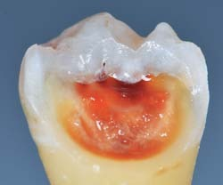
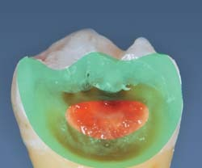
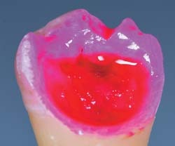
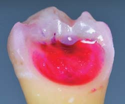
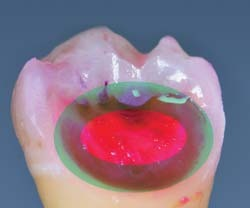
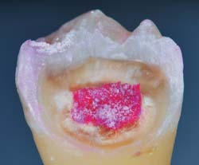
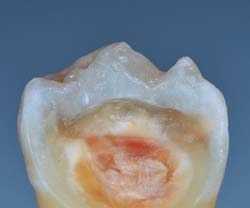
Фото 6.
Оскільки у девітальних зубах відсутній механізм внутрішньої ремінералізації, то внутрішній шар дентину необхідно препарувати також. Повноцінну некректомію рекомендують робити до початку ендодонтичного лікування.
На фото 9 видно стан кукси після зняття старої ортопедичної конструкції. Первинне препарування засвідчує, що дентин розм'якшений досить глибоко, тому детектор карієсу використовується кілька разів. Після кількох аплікацій і препарування стінки виснажені настільки, що навіть за сприятливого пародонтологічного статусу і гарного ендодонтичного прогнозу реставраційний прогноз цього зуба сумнівний, тим більше як опори мостовидного протеза. Пацієнтові запропоновано новий план лікування з видаленням та імплантацією.
Піскоструминну обробку дентину не рекомендується провадити за допомогою оксиду алюмінію незалежно від фракції порошку. Змащений шар, який утворюється на поверхні дентину, містить застряглі частинки оксиду алюмінію, які не змиваються навіть після нанесення ортофосфорної кислоти. Альтернатива оксиду алюмінію — гліцин, який більш селективно працює як на емалі, так і на дентині, і є водорозчинним, тому не залишається в змащеному шарі на поверхні дентину.
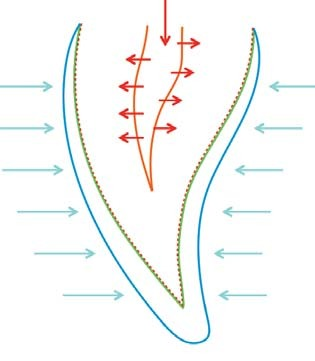
Фото 7. Механізм ремінералізації.
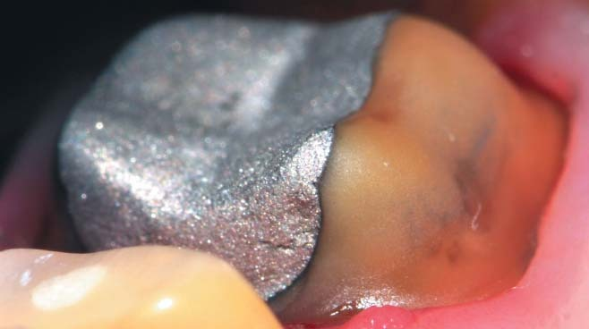
Фото 8. Вестибулярна поверхня зуба 36 після обробки оксидом алюмінію 50 мікрон.
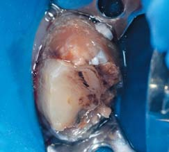
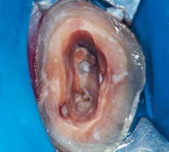
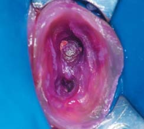
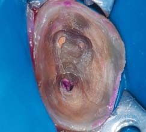
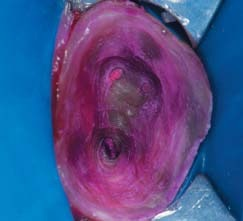
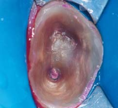
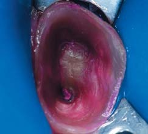
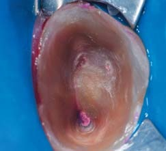
Фото 9.
Після повноцінної некректомії слід ще раз провести діагностику стану емалі на наявність нових тріщин, особливо це стосується проксимальних приясенних ділянок і великих ділянок емалі без дентинної підтримки, гострих країв і відламаних емалевих призм. При виявленні нових проблем по зовнішньому периметру порожнини проводимо додаткову обробку з можливим розширенням меж препарування. Формуємо фінішну лінію і дизайн емалевого краю в залежності від локалізації порожнини (фото 10).
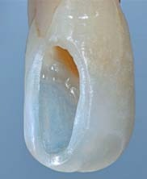
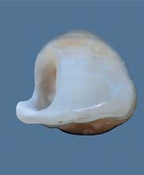
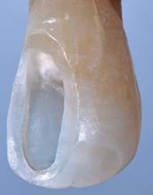
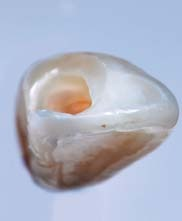
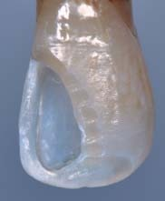
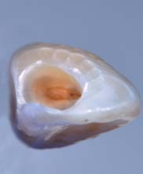
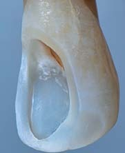
Фото 10.
Література
- Fusayama T. Two layers of carious dentin diagnosis and treatment // Operat. Dent 1979.
- Fusayama T. Clinical guide for removing caries using a caries-detecting solution. Quintessence Int 1988.
- Fusayama T. A Simple Pain-Free Adhesive Restorative System by Minimal Reduction and Total Etching. Tokyo: Ishiyaku EuroAmerica, 1993.
- Young DA, Featherstone JD, Roth JR. Curing the silent epidemic: Caries management in the 21st century and beyond. J Calif Dent Assoc 2007.
- Dietschi D, Monasevic M, Krejci I, Davidson C. Marginal and internal adaptation of Class II restorations after immediate or delayed composite placement. J Dent 2002.
- Magne P, So W, Cascione D. Immediate dentin sealing supports delayed restoration placement. J Prosthet Dent 2007.
- David S. Alleman, Pascal Magne, A systematic approach to deep caries removal end points: The peripheral seal concept in adhesive dentistry. Quintessence international 2012.
- Jenson L, Budenz AW, Featherstone JD, Ramos-Gomez FJ, Spolsky VW, Young DA. Clinical protocols for caries management by risk assessment. J Calif Dent Assoc 2007.
- Neves AA, Coutinho E, Cardoso V, Lambrechts P, Van Meerbeek B. Current concepts and techniques for caries excavation and adhesion to residual dentin. J Adhes Dent 2011.
- Thompson V, Craig R, Curro FA, Green WS, Ship JA. Treatment of deep carious lesions by complete excavation or partial removal: A critical review. J Am Dent Assoc 2008.
- Boston DW, Liao J. Staining of non-carious human coronal dentin by caries dyes. Oper Dent 2004.
- Zollner A, Gaengler P. Pulp reactions to different preparation techniques on teeth exhibiting periodontal disease. J Oral Rehabil 2000; 27: 93-102.